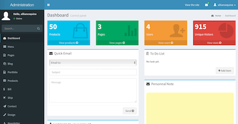

Welcome to Sellipse
Sellipse is an open source marketplace software

Sellipse enables transactions between two entities by charging a 'service fee' without directly owning any products by itself.
This new business model disrupt traditional industries by creating new sources of supply and rely on curation for developing quality and self-attainment of maturity from the vendors, or the people operating on behalf of vendors.
Authors and Contributors
Jérémie Robert (@jerob)